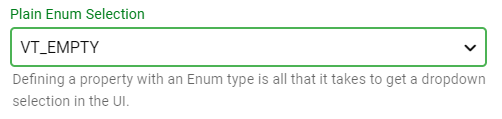
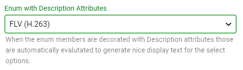
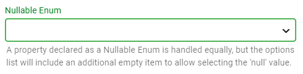
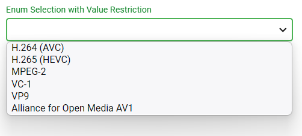
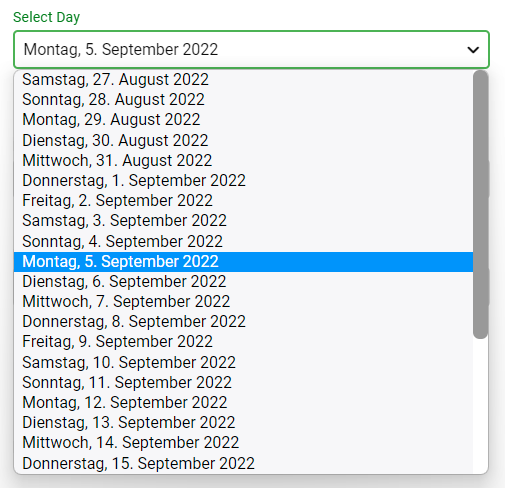
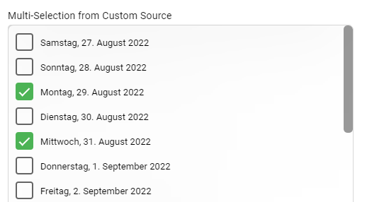

Features: Selection Input
Enum Values
Plain Enum Selection
Defining a property with an Enum type is all that it takes to create a dropdown selection in the UI.
[DisplayName("Plain Enum Selection")]
[Description("Defining a property with an Enum type is all that it takes to get a dropdown selection in the UI.")]
public VarEnum VarEnumValue { get; set; }

Enum with Description Attributes
When the enum members are decorated with @System.ComponentModel.DescriptionAttribute attributes those are automatically evalutated to generate friendly display text for the select options.
[DisplayName("Enum with Description Attributes")]
[Description("When the enum members are decorated with Description attributes those are automatically evalutated "
+ "to generate nice display text for the select options.")]
public VideoCodecTypes SimpleEnumSelect { get; set; }

Nullable Enum Selection
A property declared as a Nullable Enum is handled equally, but the options list will include an additional empty item to allow selecting the 'null' value.
[DisplayName("Nullable Enum")]
[Description("A property declared as a Nullable Enum is handled equally, but the options list will include an additional "
+ "empty item to allow selecting the 'null' value.")]
public VideoCodecTypes? SimpleEnumSelectNullable { get; set; }

Enum Selection with Value Restriction
Adding an SelectItemsSourceAttribute allows specifying a list of enum values to a subset of the actual enum members.
public IList<VideoCodecTypes> RestrictedCodecList => new[] { VideoCodecTypes.h264, VideoCodecTypes.hevc, VideoCodecTypes.mpeg2video, VideoCodecTypes.vc1, VideoCodecTypes.vp9, VideoCodecTypes.av1 };
[DisplayName("Enum Selection with Value Restriction")]
[SelectItemsSource(nameof(RestrictedCodecList))]
public VideoCodecTypes RestrictedEnumSelect { get; set; }

Custom List Selection
Single-Selection from Custom List
This demonstrates the use of a custom list which is part of the UI class. In this example, all Saturdays and Sundays are disabled and unavailable for selection.
Create Select List
The following method generates a list of EditorSelectOption items.
public CreateSelectList()
{
var list = new List<EditorSelectOption>();
var date = DateTime.Now.Date;
for (int i = 0; i < 30; i++)
{
list.Add(
new EditorSelectOption
{
Value = date.ToString("O").Substring(0, 10),
Name = date.ToString("D"),
ShortName = date.ToString("ddd, d"),
IsEnabled = date.DayOfWeek != DayOfWeek.Saturday && date.DayOfWeek != DayOfWeek.Sunday,
ToolTip = "This is a tooltip: " + date.ToLongDateString(),
Color = date.DayOfWeek == DayOfWeek.Sunday ? "red" : null,
});
date = date.AddDays(1);
}
this.DatesList = list;
}
Properties
With the SelectItemsSourceAttribute, a list of EditorSelectOption items can be used to provide list of custom elements for selection.
[Browsable(false)]
public IEnumerable<EditorSelectOption> DatesList { get; set; }
[DisplayName("Select Day")]
[Description("With the SelectItemsSource attribute, a list of EditorSelectOption items can be used to provide list of arbitrary elements for selection.")]
[SelectItemsSource(nameof(DatesList))]
public string StaticValueSelect { get; set; }

Multi-Selection from Custom List
The EditMultilSelectAttribute turns a selection element into a a multi-select element.
[DisplayName("Multi-Selection from Custom Source")]
[Description("This is the regular multi-select input.")]
[EditMultilSelect]
[SelectItemsSource(nameof(DatesList))]
public string MultiEnumSelect { get; set; }

Multi-Line Multi-Selection from Custom List
This is a multi-select input showing multiple lines. Its primary use case is showing realtime status messages rather than for users making selections.
The EditMultilSelectAttribute indicates selection of multiple items while the qMediaBrowser.Model.Attributes.EditMultilineAttribute tells how many rows should be visible.
[DisplayName("Multiline Multi-Selection from Custom Source")]
[Description("This is a multi-select input showing multiple lines. Its primary use case is showing realtime status messages "
+ "rather than for users making selections.")]
[EditMultiline(8)]
[EditMultilSelect]
[SelectItemsSource(nameof(DatesList))]
public string MultiEnumSelect2 { get; set; }